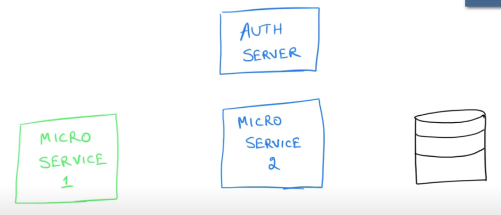

Authentication vs authorization
Authentication: who you are?
- knowledge based authentication (username password)
- possession based authentication (token, text message)
- Multi-fact authentication (1+2)
Principle: an logged in user
Authorization: what do you want to do? Are you allowed to do this?
This depends on the permission (granted authority) a user has.
- Authorities are fine grained
- Roles are coarse grained (a group of authorities)
One spring boot application can have multiple authorization providers (LDAP, JWT, Oauth, database auth, in memory auth, etc...), there is a authorization manager who handles the incoming authorization request and propagate that to the proper provider to authorize (the provider has to support the authorization type).
JWT - JSON Web Token
RFC5741
Session Token - reference token
Token is created and maintained by server side.
Client passes the token to the server as part of every request.
Usually it is stored in cookies
Issues are:
- There isn't always just one server, usually there are multiple server nodes under a load balancer;
- If we use one shared cache (redis for example) to store the token, it will resolve 1, but introduces single point of failure.
JSON Web Token - value token
JWT only comes into the picture when authentication is complete.
Server will not give a reference of the details, instead it gives client the detail itself.
There is a payload that is the core part of JWT, which is surrounded by a header and a signature to make it secure. Although there are chances that the JWT was stolen by others. To prevent that, you will need to be careful of how to transmit your JWT, like using HTTPS instead of HTTP, with a bunch of other authentication and authorization mechanisms, like OAuth.
How to disable JWTs? Have a blacklist of JWTs.
Structure of JWT
This website will give you the idea of what JWT looks like.
For signature:
// signature algorithm
data = base64urlEncode( header ) + "." + base64urlEncode( payload );
signature = Hash( data, secret );JWT pros and cons
PROS
- No database lookups
CONS
- non revocable (revoke them before they expire can be hard) - keep lifecycle short, revocation list.
OAuth
OAuth is for authorization between services (microservices).
Terminology
- Resource
- Resource owner
- Resource server
- Client
OAuth workflow
- Authorization code flow
- Resource owner sends request to client (I want you to go to my google drive account to get the photo and print it);
- Client sends request to the authorization server (might be on the same backend server as the resource server)
- Authorization server asks resource owner for the permission;
- Owner sends the confirmation back to auth server;
- After getting the permission from owner, authorization server will send client a auth token
- After getting the auth token, client will make another request to auth server for access token
- Auth server sends access token to the client
- Client then uses the access token to access the resource in the resource server;
- Resource server responds with the resource;
Think of access token as the hotel room key, auth token as booking confirmation.
- Implicit flow
- Resource owner sends request to client (I want you to go to my google drive account to get the photo and print it);
- Client sends request to the authorization server (might be on the same backend server as the resource server)
- Authorization server asks resource owner for the permission;
- Owner sends the confirmation back to auth server;
- After getting the permission from owner, authorization server will send client a access token
- Client then uses the access token to access the resource in the resource server;
- Resource server responds with the resource;
It's less secure than the first flow, and it's primarily used with short-lived access tokens.
- Client credentials flow (when the client is well trusted - confidential clients)

- Microservice 1 sends request to auth server;
- Auth server replies with an access token;
- Microservice 1 sends request to Microservice 2 with this token;
- Microservice 2 will server the request;